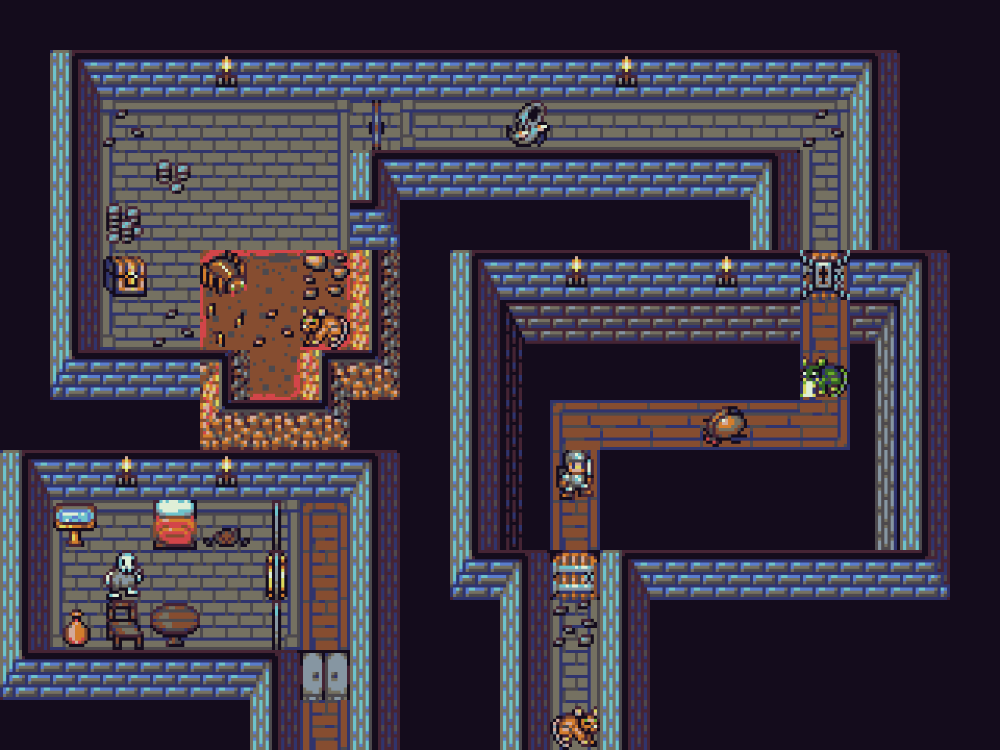

References / Illustration / 413
DawnLike 16 × 16 roguelike tileset
DragonDePlatino’s open tileset for roguelike games draws walls, floors, furniture, and monsters on a 16-pixel grid in one 16-color palette.
- Source
- OpenGameArt: DawnLike - 16x16 Universal Rogue-like tileset v1.81
- Creator
- DragonDePlatino, with the DawnBringer 16 palette by DawnBringer
- Made
- 2014 (first posted 29 January 2014; v1.81)
- Style
- Pixel Art (agent-proposed, not yet reviewed by a person)
- Moods
- Game-like, crisp, handmade, nostalgic
- Evidence
- Downloaded the sample map
Dungeon_0.giffrom the OpenGameArt page (640 × 480 px, already enlarged 2×) and inspected it enlarged again to 1280 × 960 px. The file has exactly 16 colors. - Reviewed
- Rights
- Open license, stored. License: CC-BY-4.0. Rights policy
Context
DragonDePlatino writes that the project began in autumn 2013 as DawnHack, a tileset for NetHack, and grew into a general tileset for roguelike games. OpenGameArt.
The page tags the set “16x16” and “16 Color” and requires users to credit DawnBringer, “that mad color-bending genius” who made the palette that the pack uses. OpenGameArt.
The author says that he used the DawnBringer 16 palette as a personal challenge. OpenGameArt comments.
Observed
- Three dungeon areas seen from above on a near-black purple ground (#140c1c).
- Walls are rows of blue-gray bricks with a pale cyan top edge and a dark outline, drawn as a thick frame around each room.
- Floors are gray brick tiles. One room has a brown dirt floor with an orange rubble edge.
- Small sprites stand on the tiles: a knight, a skeleton, a chest, barrels, a bed, a table, candles on the walls, a beetle, and a cat.
- Every edge is stepped. There is no anti-aliasing and no gradient: shading uses two or three flat steps of one hue.
- The measured image has 12 colors above a 2 percent share and a low mean chroma (0.11), with small saturated accents of cyan and orange.
Why it belongs
A clear example of the style’s tile grammar: every object fits a 16-pixel cell, and one shared palette makes walls, monsters, and props read as one world.
The palette is muted and dark rather than the saturated console look. This shows that a fixed small palette, not high saturation, is the core trait.
Borrow
Choose one published 16-color palette and draw every element with it.
Frame panels with a two-tone edge, a light top line, and a dark outline, as the walls do here.
Measured
Machine-extracted by tools/image-traits.py on . Full measurement.
- Mean chroma
- 0.11
- Palette
- #140c1c 41%
- #777362 10%
- #31356b 9%
- #4e484c 7%
- #442938 6%
- #615f63 5%
- #874e31 3%
- #697281 3%

